Café de grano
Capuchino, cortado, latte, matcha, espresso y mockaccino — con distintos tipos de leche. Está escrito en nuestra pizarra.
Ver la carta →Estado 653 · Paseo peatonal, Rancagua
Café de grano, helados artesanales y pastelería hecha acá mismo, servidos sobre mesas de mosaico. Y con de los mejores precios del centro de Rancagua.
Lunes a viernes de 08:00 a 20:00 · sábado desde las 12:00
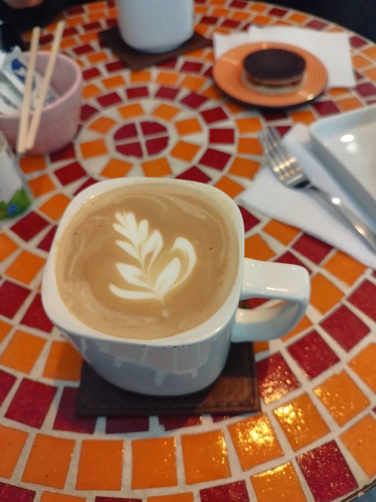
Capuchino, cortado, latte, matcha, espresso y mockaccino — con distintos tipos de leche. Está escrito en nuestra pizarra.
Ver la carta →Cheesecake de maracuyá, rollitos de canela, red velvet, kuchen y helados artesanales. "Deliciosos, autóctonos y variados".
Conocer el local →Entre $1.000 y $5.000 por persona. Es de lo más económico de todo el centro, y nuestros clientes lo nombran una y otra vez.
Cómo llegar →Nosotros
Buena, bonita y barata. Tampoco es nuestra frase: es de una reseña.
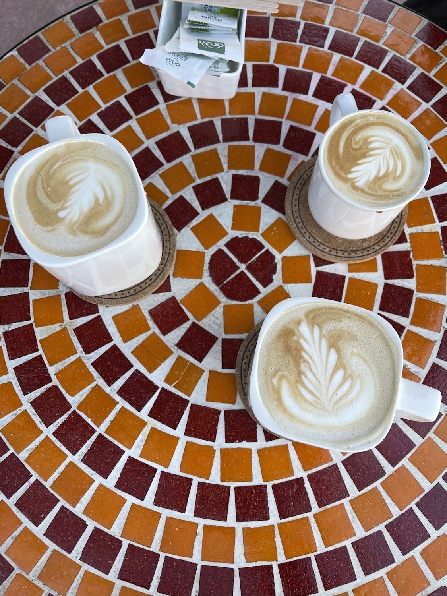
“Notable cafetería atendida por una crack. Simplemente es perfecta. (…) Hoy en día quedan pocos locales que puedan tener las 3 B's y este local tiene las tres y más.” Alexis Pino, en Google
El servicio personalizado aparece en reseña tras reseña. No es una cadena: es un local chico del paseo peatonal donde alguien se acuerda de lo que pediste.
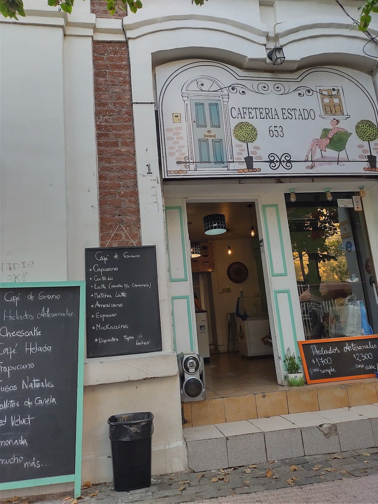
No hay menú impreso ni carta digital: lo que ofrecen está escrito con tiza en dos pizarras apoyadas en la vereda del Paseo Estado. Todo lo que aparece en la sección Carta de esta página salió de ahí.
Marcos verde menta, fachada blanca y mesas afuera, en pleno paseo peatonal del centro de Rancagua.
Ver lo que dicen las pizarras →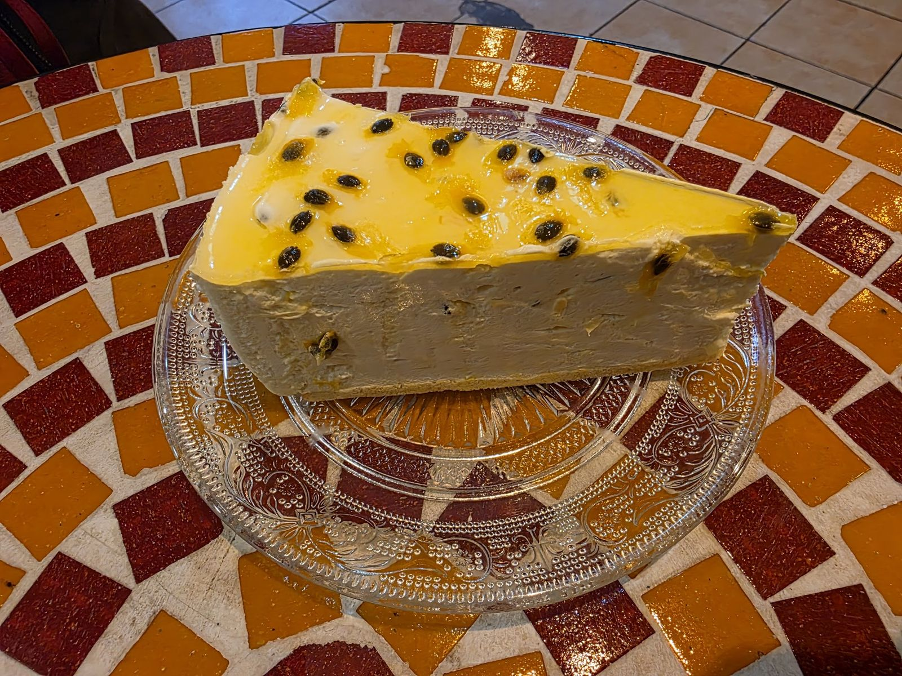
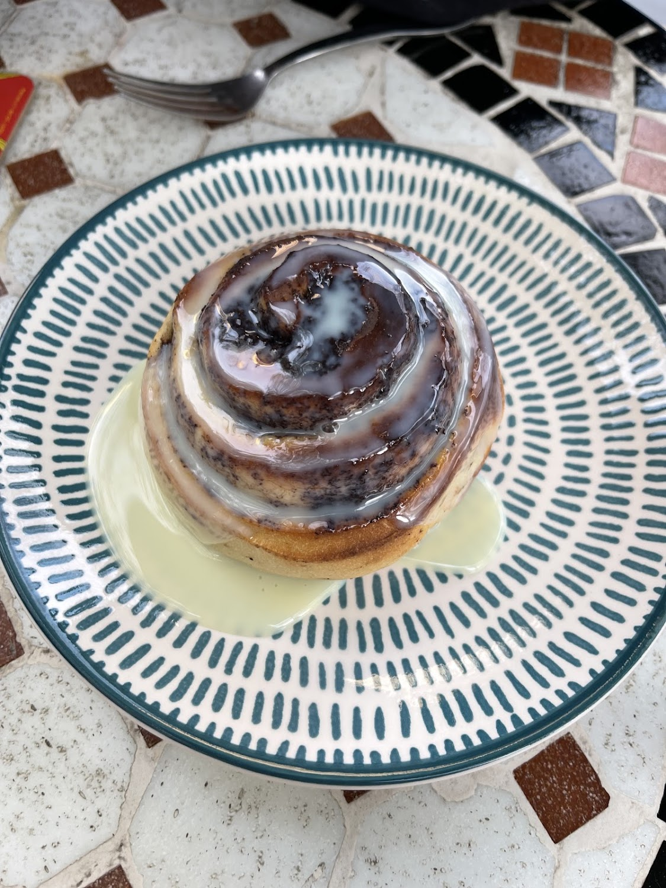
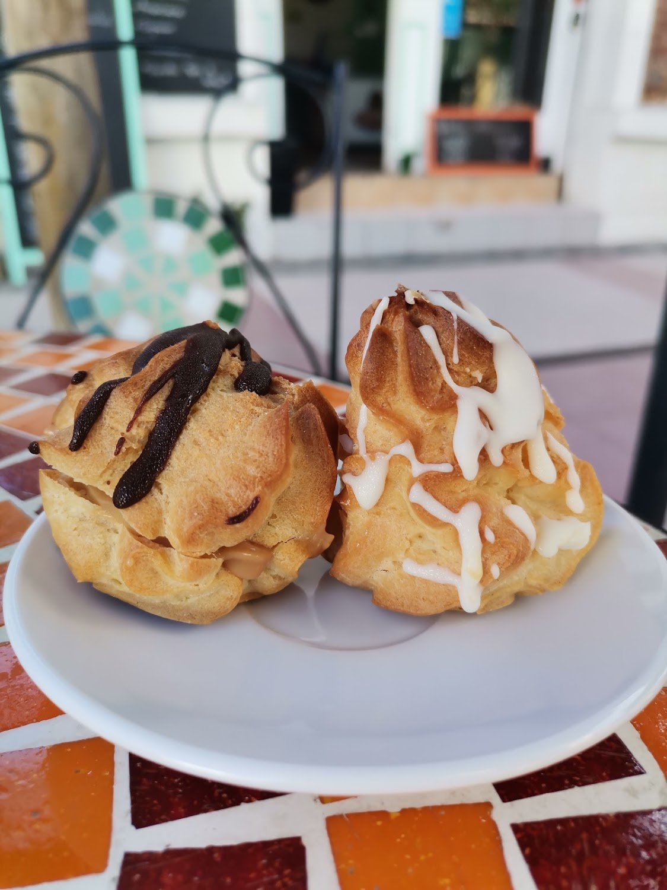
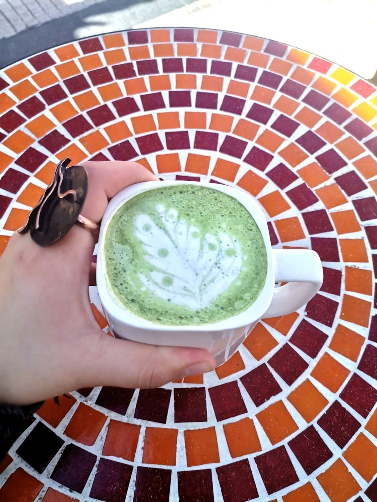
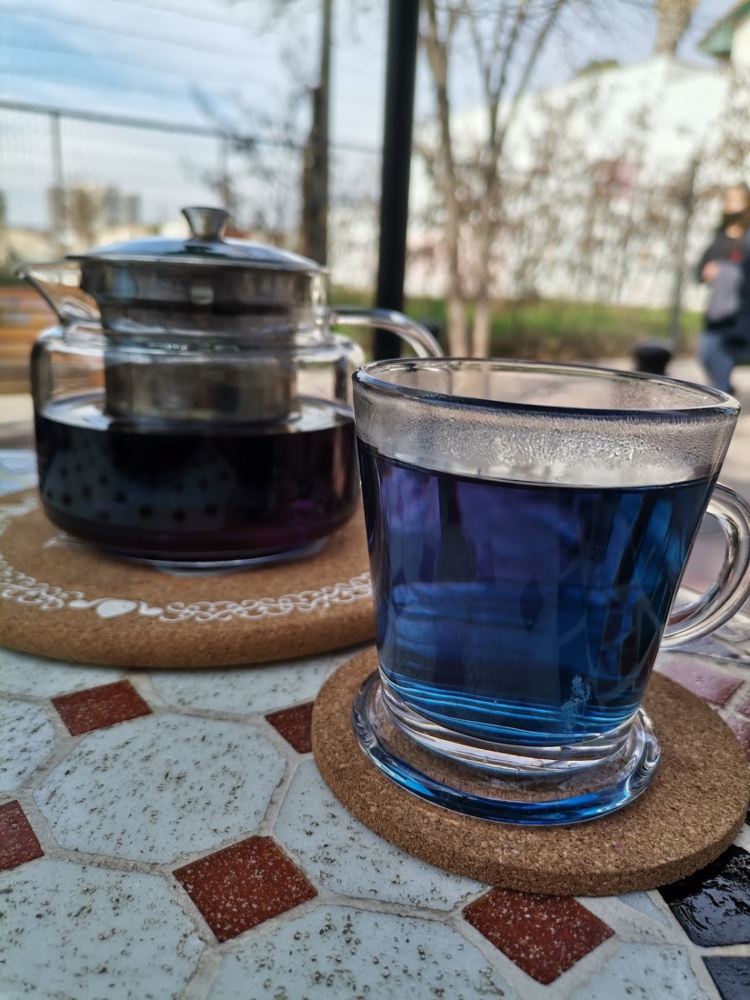
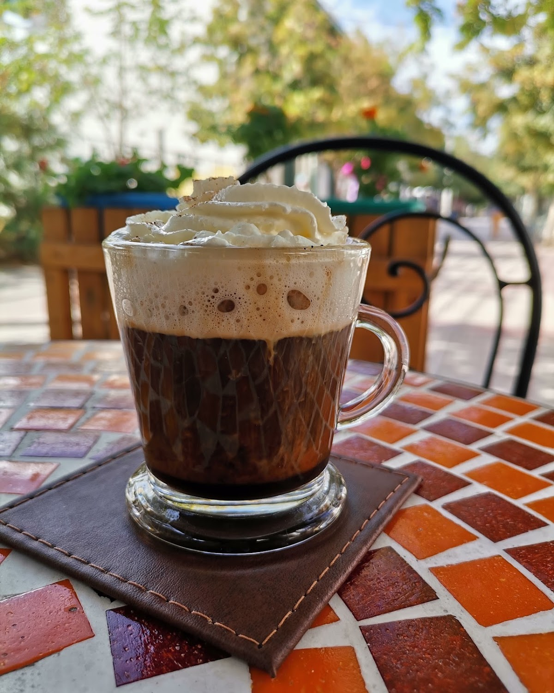
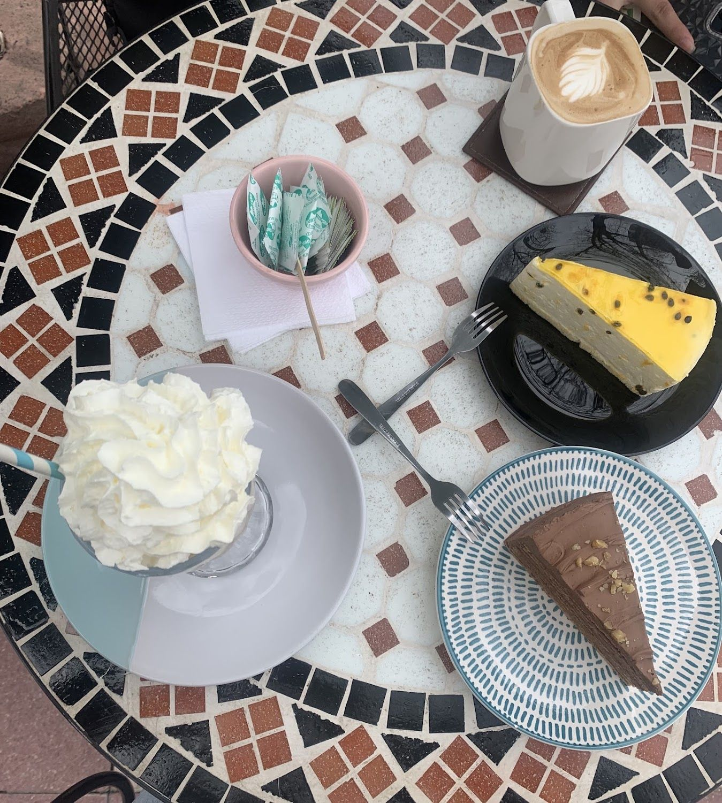
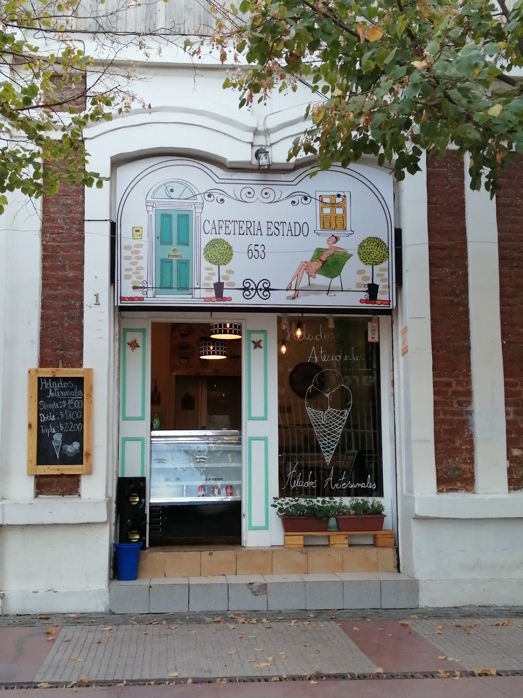
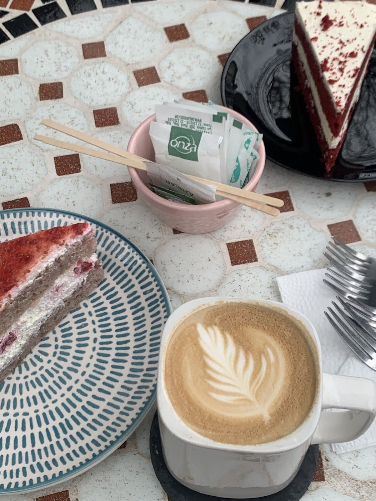
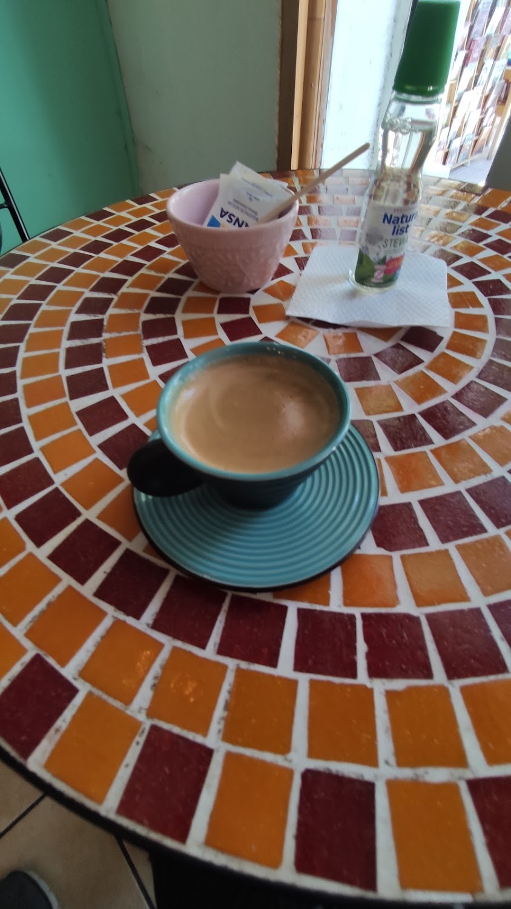
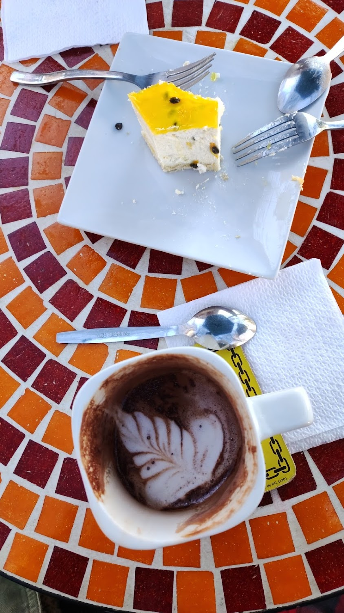
Carta
Lo que está escrito en nuestras dos pizarras.
Su pizarra agrega: "diferentes tipos de leches".
Reseñas
Lo que dicen nuestros clientes en Google.
★★★★★
¡UNA JOYA! | De los mejores cafés calidad-precio de la ciudad. El nivel de la bebida es muy alto, los pasteles deliciosos, autóctonos y variados, y el lugar al estar ubicado en Paseo Estado tiene un ambiente muy agradable.
★★★★★
Notable cafetería atendida por una crack. Simplemente es perfecta. Buena atención, buen capuchino, buen cheesecake, bonito lugar y buen precio. Hoy en día quedan pocos locales que puedan tener las 3 B's y este local tiene las tres y más. Sin más: recomendadísimo.
★★★★★
Excelente el café, los postres, la relación precio-calidad y el servicio personalizado hacen que sea la mejor cafetería en Rancagua
Redes
Todos nuestros canales, en un solo lugar.
Visítanos
Estado 653, Local 1
Paseo Estado · Rancagua, O'Higgins
Plus Code R7G5+PC · es un paseo peatonal
Lunes a viernes de 08:00 a 20:00